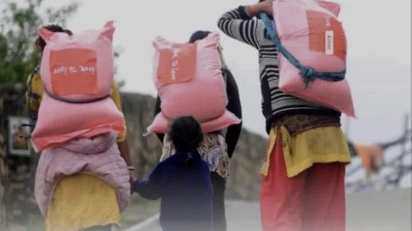
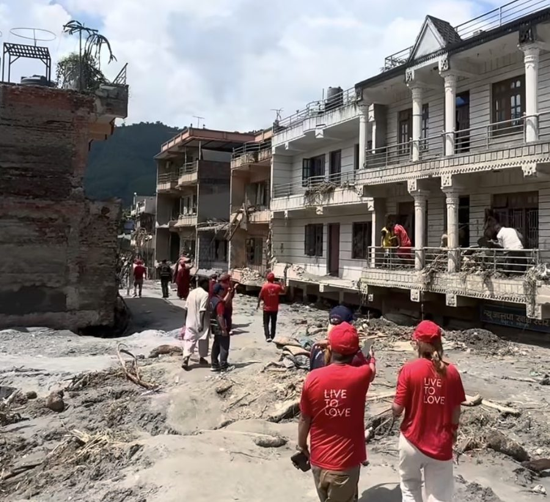

Agir avec les communautés himalayennes, et non pour elles.
Live to Love est l'organisation humanitaire née à l'initiative de Sa Sainteté le XIIe Gyalwang Drukpa. Elle travaille aux côtés des populations de l'Himalaya, dans des vallées souvent difficiles d'accès, où les secours mettent des jours à parvenir et où les habitants sont les premiers à se porter secours entre eux.
Son action couvre l'éducation, l'accès aux soins, la protection de l'environnement et le secours d'urgence après les catastrophes naturelles. Un fonds d'intervention himalayen maintient en permanence un réseau de partenaires locaux, capables d'agir dans les jours qui suivent un sinistre. Ce sont ces partenaires, déjà sur place, qui rendent l'aide possible là où les organisations internationales n'arrivent que bien plus tard.
L'association Drukpa Grenoble relaie ces appels auprès de ses membres et de ses amis. Live to Love France est l'antenne française de l'organisation.

Le 26 août 2026, une lave torrentielle provoquée par l'effondrement d'un glacier à la frontière népalo-tibétaine a ravagé la vallée de la Trishuli, du nord au sud du Népal. En quelques minutes, elle a emporté des milliers de vies, des villages entiers, des routes, des ponts et des installations hydroélectriques.
L'accès à ces zones reculées reste très difficile pour les secours, et les survivants demeurent isolés et démunis en cette période de mousson, où les pluies aggravent encore la situation. Les équipes de Live to Love, en contact étroit avec leurs partenaires sur le terrain, ont commencé à acheminer des denrées de première nécessité dans les premières zones accessibles.
Les catastrophes tuent deux fois. Les inondations fauchent des vies, puis, dans les semaines qui suivent, viennent les morts plus silencieuses : eaux contaminées, faim, trafic d'êtres humains. Les dons servent à acheter et à préparer des fournitures de première nécessité, et à constituer des stocks pour tenir dans la durée, car l'effort sera long.

Le don en ligne passe par HelloAsso, sur la page officielle de Live to Love France. Pour un don par chèque, le RIB et les coordonnées de la trésorière sont communiqués sur demande : nous écrire.
Deux jours pour se retrouver, pratiquer et soutenir les actions de Live to Love.
| Date | Événement |
|---|---|
| Sam. 10 – dim. 11 octobre 2026 | Journées Live to Love |
| Sam. 5 – dim. 6 décembre 2026 | Journées Live to Love |
Participer. Les Journées Altruistes sont ouvertes à toutes et à tous. Pour connaître le programme et le lieu de chaque week-end, écrivez-nous.